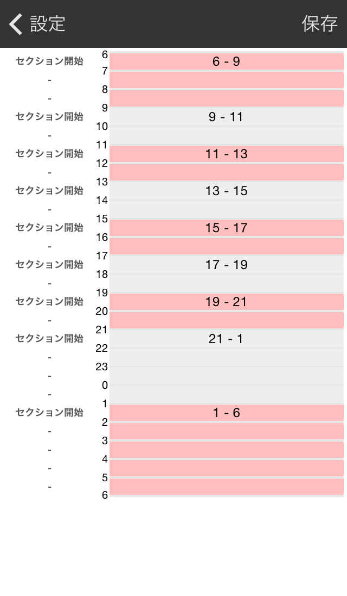

初期設定
アカウント設定（Settingタブ→Account）
- Evernote, Mail：ログやレポートの送信先設定
- Foursquare：たすくまからのチェックイン用
時間、Section設定（Settingタブ→Time&Section）
- DateLine：たすくま上の日付変更線の時間を設定
- たとえば4時に設定すると、たすくま上では4/1 4:00〜4/2 4:00の24時間が4/1として扱われます。
- 0時以降に就寝する場合に、起床〜就寝までを1日と扱うために使用します。
- 初期設定は4時となっています。
- この時刻を過ぎてたすくまを起動すると、前日のタスクログのレポート作成と、当日のタスクリストの作成が行われます。
- DateStart：1日のSectionの開始時刻を設定
- SectionSetting：最小1時間単位でSectionを設定

- 時刻の左側のボタンを押して、Sectionを区切ります。
- ボタンが押しにくい場合には、ピンチアウト（2本指で広げる）で拡大できます。
→Help Topへ →Taskuma Topへ